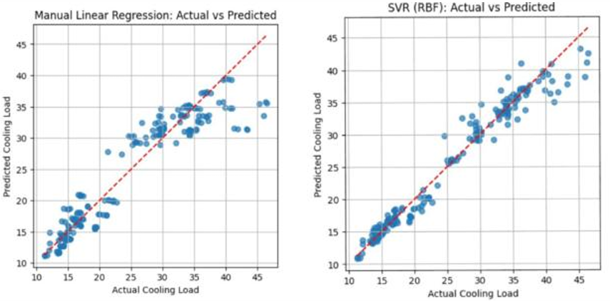
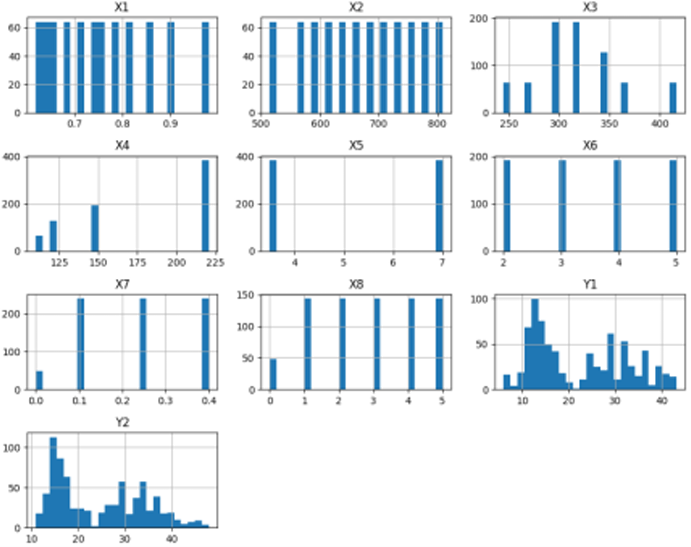
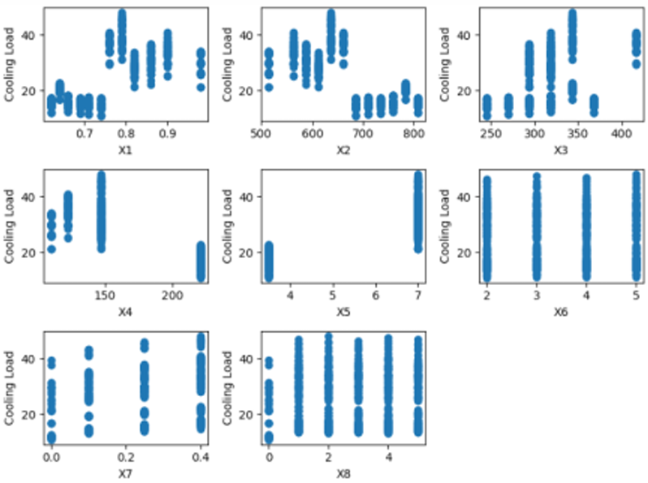
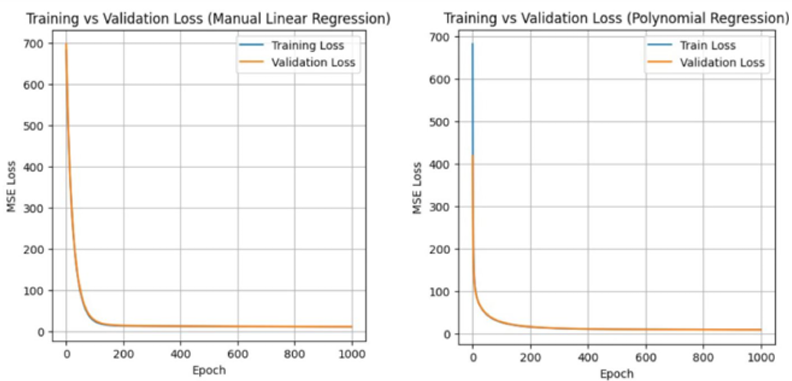
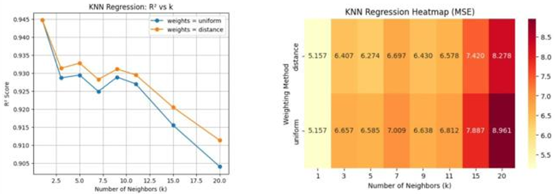
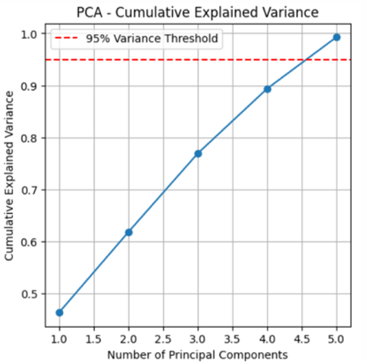
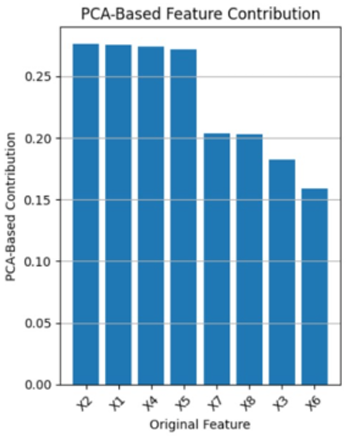
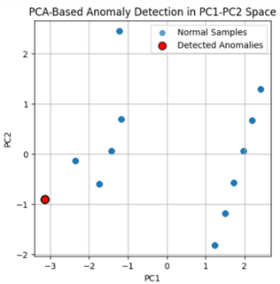

768
Building configurations
Simulated residential building configurations used to develop and evaluate predictive models.
MACHINE LEARNING ENGINEERING PROJECT · 2026
Developed and evaluated multiple machine learning regression models to predict building cooling loads from architectural and geometric design parameters. The project investigated how data-driven predictive techniques can capture relationships between building characteristics and cooling demand, supporting preliminary HVAC design assessment and building-performance analysis.

MACHINE LEARNING · PREDICTIVE MODELING · HVAC
The project explored supervised machine learning as an alternative approach to estimating building cooling requirements from architectural and geometric parameters.
Multiple regression algorithms were implemented and compared, alongside gradient-descent optimization, cross-validation, dimensionality reduction, and anomaly detection.
The project was motivated by the increasing role of artificial intelligence and data-driven techniques in building energy management and HVAC engineering.
Traditional cooling-load calculations require detailed evaluation of heat transfer, building geometry, solar gains, and numerous interacting design variables. These relationships can introduce considerable complexity when evaluating alternative building configurations.
Machine learning offers an alternative approach by learning relationships from existing building-performance datasets. The objective was to investigate whether predictive models could estimate cooling demand accurately enough to support preliminary building-design decisions.
The study used the UCI Energy Efficiency dataset, consisting of 768 simulated residential building configurations. Each configuration was represented by eight architectural and geometric input features.
The input variables included relative compactness, surface area, wall area, roof area, overall height, orientation, glazing area, and glazing-area distribution. These variables formed the input space for the supervised regression models.
The prediction task focused on estimating the building cooling load (Y2) from the eight input features.
Simulated residential building configurations used to develop and evaluate predictive models.
Architectural and geometric parameters describing each building configuration.
Building cooling load, used as the regression target variable.
Before model development, exploratory data analysis was conducted to understand the distribution of the building features and their relationships with cooling load.
Descriptive statistics, histograms, boxplots, correlation analysis, and feature-target visualizations were used to investigate the dataset, identify distribution patterns, and examine the relationships between architectural parameters and cooling demand.
This stage provided an initial understanding of the data and helped motivate the investigation of nonlinear regression algorithms.

Feature distributions were examined to understand the range, variability, and statistical behavior of the building parameters.
Histograms and boxplots provided an overview of the data and helped identify unusual observations requiring further investigation.

Feature-target visualizations were used to examine how individual building parameters relate to cooling demand.
The observed relationships motivated the comparison of linear and nonlinear predictive models.
Following the exploratory analysis, the dataset was prepared for supervised learning. The development workflow incorporated train-test splitting, feature standardization, and algorithm-appropriate preprocessing.
A linear regression model was implemented as an initial predictive baseline. This provided a reference against which more flexible regression methods could be evaluated.
The project also involved manually implementing linear regression and polynomial regression models, including iterative parameter optimization through gradient descent.

Gradient descent was implemented to iteratively update model parameters and minimize the prediction error.
Both linear and polynomial regression were manually trained, providing practical experience with optimization, convergence behavior, and model complexity.
After establishing the baseline, multiple supervised regression algorithms were implemented and compared to investigate their ability to model the relationship between building characteristics and cooling demand.
The model selection covered approaches with different levels of flexibility and complexity, allowing the investigation of linear, nonlinear, tree-based, distance-based, and kernel-based regression.
Linear Regression, Polynomial Regression, and Ridge Regression were used to investigate linear relationships, nonlinear transformations, and regularization.
Decision Tree and Random Forest regression were implemented to capture nonlinear relationships and feature interactions.
K-Nearest Neighbors and Support Vector Regression were used to explore alternative predictive approaches.
The comparison of these algorithms enabled the evaluation of different modeling strategies and their suitability for predicting building cooling loads.
Model optimization focused on investigating how algorithm parameters and model complexity influence predictive performance.
The project incorporated Ridge regularization, gradient-descent optimization, and hyperparameter evaluation to investigate the balance between model flexibility and generalization.
Different KNN configurations were evaluated to determine how the neighborhood size influenced prediction accuracy.

Different KNN configurations were evaluated to investigate the influence of the neighborhood parameter on regression performance.
This stage demonstrated the importance of hyperparameter selection when developing predictive models and comparing their performance.
Beyond predictive modeling, the project investigated the structure of the original feature space through Principal Component Analysis.
PCA was applied to examine feature redundancy and reduce the dimensionality of the original eight-variable dataset. The analysis investigated how much of the original dataset variance could be retained using a smaller number of principal components.
PCA-based reconstruction-error analysis was also implemented to identify unusual building configurations and investigate their influence on predictive modeling.

PCA reduced the original eight input features to five principal components while retaining 99.28% of the total dataset variance.
This demonstrated that a reduced representation could preserve most of the information contained in the original feature space.

The PCA contribution analysis was used to investigate how the original building features contribute to the reduced representation.
This provided insight into the structure of the dataset and the information retained after dimensionality reduction.

PCA-based reconstruction-error analysis was implemented to identify building configurations that differed from the dominant patterns in the dataset.
Eight unusual configurations were identified for further investigation, allowing the analysis to extend beyond prediction accuracy to data quality and structure.
The predictive models were evaluated using multiple regression-performance metrics to investigate their accuracy and generalization behavior.
Mean Absolute Error (MAE), Mean Squared Error (MSE), Root Mean Squared Error (RMSE), and the coefficient of determination (R²) were used to assess prediction performance.
Training and testing performance, residual distributions, and five-fold cross-validation were also investigated to assess model generalization and the potential influence of overfitting.
Best coefficient of determination on the fixed train-test split.
Mean Squared Error achieved by Support Vector Regression on the fixed test split.
Highest average coefficient of determination obtained through five-fold cross-validation.
Support Vector Regression achieved the strongest performance on the fixed train-test split, while Random Forest achieved the highest average R² during five-fold cross-validation.
These results highlight the importance of considering the validation strategy when comparing machine learning algorithms.
| Evaluation procedure | Best model | R² | MSE |
|---|---|---|---|
| Fixed train-test split | SVR | 0.966 | 3.170 |
| Five-fold cross-validation | Random Forest | 0.9726 | Not specified |
Beyond statistical prediction, the project investigated how machine learning outputs could be interpreted in the context of building thermal performance.
The analysis identified surface area, relative compactness, overall height, and roof area among the influential parameters in cooling-load prediction.
Understanding these relationships connects predictive modeling with the physical characteristics of buildings and their potential cooling requirements.
The resulting models can support preliminary HVAC cooling-load estimation, comparison of alternative building configurations, and early-stage building energy analysis.
Predictive models can support preliminary cooling-demand estimation from building design parameters.
Data-driven predictions can help compare alternative architectural and geometric building configurations.
Machine learning can complement conventional building-performance analysis and engineering decision-making.
As part of a four-member engineering team, I contributed to the development and evaluation of the machine learning workflow, covering data preparation, predictive modeling, optimization, and engineering interpretation.
Analyzed the UCI Energy Efficiency dataset using descriptive statistics, histograms, boxplots, correlation analysis, and feature-target visualizations.
Implemented and compared Linear Regression, Polynomial Regression, Ridge Regression, Decision Trees, Random Forest, KNN, and SVR.
Contributed to train-test splitting, feature standardization, manual gradient-descent implementation, and hyperparameter evaluation.
Applied PCA to investigate feature redundancy, reduce dimensionality, and examine the retained dataset variance.
Evaluated predictive performance through MAE, MSE, RMSE, R², residual analysis, and five-fold cross-validation.
Investigated how building geometry, surface area, compactness, height, and glazing characteristics influence cooling-load predictions.
Modeling complex interactions between building geometry, envelope characteristics, and cooling demand.
Comparing regression algorithms with different levels of flexibility, complexity, and predictive accuracy.
Balancing prediction accuracy against generalization to previously unseen building configurations.
Applying appropriate preprocessing methods while avoiding information leakage between training and testing data.
Evaluating whether reducing the original feature space improved computational efficiency or prediction performance.
Distinguishing unusual but valid building configurations from potentially problematic observations.
The project successfully developed and evaluated multiple machine learning regression models for building cooling-load prediction using 768 simulated residential building configurations.
Support Vector Regression achieved a test R² of 0.966 and an MSE of 3.170 on the fixed train-test split, while Random Forest achieved the strongest average R² of 0.9726 through five-fold cross-validation.
The study also demonstrated the application of gradient descent, hyperparameter optimization, PCA-based dimensionality reduction, and anomaly detection within a unified predictive modeling workflow.
Multiple linear, nonlinear, tree-based, distance-based, and kernel-based regression approaches evaluated.
Five principal components retained 99.28% of the original dataset variance.
Building configurations identified through PCA-based anomaly detection.
Overall, the project demonstrated how machine learning can complement conventional HVAC engineering methods by providing data-driven predictions, identifying influential building characteristics, and supporting preliminary building-performance analysis.
It provided practical experience in the complete predictive modeling workflow, from exploratory data analysis and algorithm implementation to optimization, validation, and engineering interpretation.